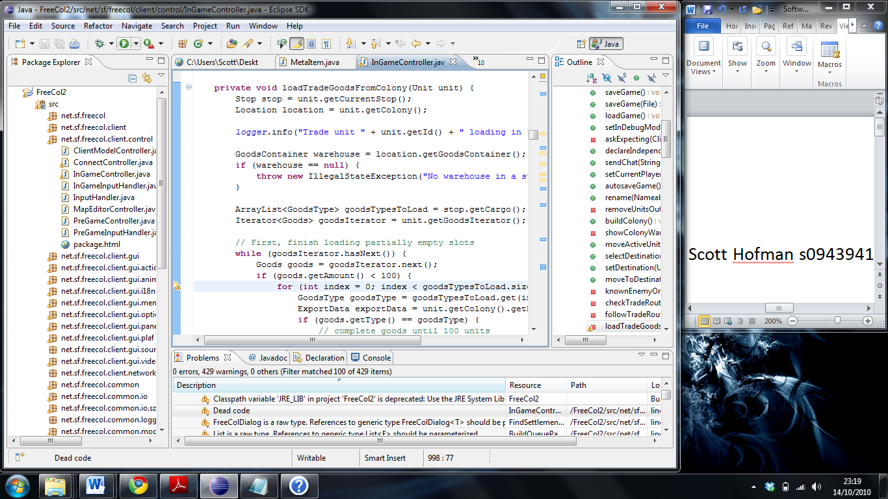
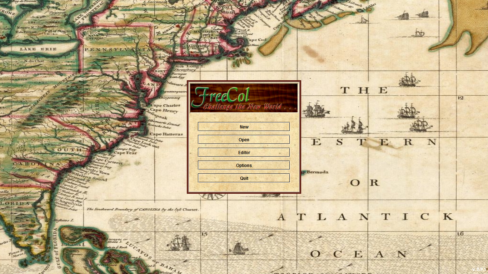

Name : Scott Hofman
Student Number : s0943941
Source Forge URL : http://www.sourceforge.net/projects/freecol/
Website URL: http://www.freecol.org/
Question 1)
FreeCol is an open source clone of the 1994 game Sid Meier’s Colonization. Written originally in C++, the core development team (consisting of four members) switched to Java early on in the development process, and have actively worked on it ever since. Despite its existence since 2003, the game is still in Beta, having gone through 11 iterations since its inception. As a clone of the 1994 turn based strategy game, the developers have recreated the game as close to the original as possible. You take control of one of the four seafaring nations during the history of colonization – Spain, France, Netherlands and England – and discover the New World and colonize it. The designers not only adapted the game for modern computers, but improved the graphics and added functionality. This includes cross-platform functionality, multiplayer, and a vast number of gameplay improvements the large fan base of FreeCol decided they want in their game.
I choose this package for three reasons. Primarily, I have heard from the recommendations of elder cousins that Colonization was a tremendous game that they grew up playing, and I had always wanted to try it. Their recommendation and the longing that resulted from said words motivated me towards trying FreeCol as a project. Secondly, game design has always intrigued me, being the primary reason I study informatics, and this project gives me ample opportunity to study and learn the inner machinations of game coding and what difficulties arise in trying to manage such a large project with only a few members. Thirdly, I briefly analysed the code before selecting this as my project, and saw that it was well written, well documented and not as big as some of the other online games are – in other words, perfectly sized for somebody who has never tried anything of this scope before.
Originally, I attempted to build the project on the DICE machines at school. This was a straightforward process of importing the project into Eclipse and building it, with only one hiccup which resulted from the package searching for a file folder named net while the package containing the necessary files was called src. Simply renaming the file to net solved the problem, and I was able to compile and run the program without error. In hindsight however, refactoring could have potentially solved this (having learned about it later in the lectures), and, had I encountered the same error when attempting to run the project on my laptop, would have investigated.
I then tried to build the project at home, on a Windows 7 Home Premium Asus UL30A series laptop using Eclipse and the Ant Build File. When I imported the files, however, it only imported the files from the src folder, and not the other folders (for further descriptions of files, see question 2). It took me about fifteen minutes to rectify my mistake, and get the program to run on Windows. The screenshots below detail first the image of the program in Eclipse (with name and student number on the side), about to run the main file of FreeCol.java and the second shows the actual program which appears moments later (I tried multiple ways to get it to run in a minimized window to show both, but I was unable).

An image of FreeCol

Question 2)
FreeCol was written in Java, utilizing a JDK from Sun to both compile and run their program. Despite being a relatively small project (only 156737 lines of code, only half of which are java code, the rest being comments and blank lines for readability), this is far larger than anything I have attempted. It was extremely helpful to note that the developers maintained good coding throughout the package, describing each function’s purpose with clarity and neatness in their commenting and keeping their labelling consistent. Their javadoc file was an incredible aid in determining the functionality of the packages, the classes, the variables, and the methods within the classes. It can be found here at: http://www.freecol.org/javadoc/. My sole complaint about it is the fact that the player needs a firm understanding of the game mechanics to understand what the variable names refer to. For instance, the private Boolean Integrity refers to “did the integrity check succeed.” Useful only if you know exactly what an integrity check is, or what it is used for, but meaningless without.
The package list, located within the src folder, can be subdivided into six subpackages – those dealing with the client/single user (named net.sf.freecol.client.x), those dealing with the common files used by both the client and the servers (named net.sf.freecol.common.x ), those dealing with the server (named net.sf.freecol.server.x), those dealing with the tools (named net.freecol.tools), the metaserver (named net.sf.freecol.metaserver) and the main package for freecol, where the main method is located (named net.sf.freecol ).
Each of these packages contains a list of .java files pertaining to the individual actions they are expected to run. For example, the net.sf.freecol.client.gui.action package contains a list of .java files that define the actions used in the GUI. The classes required to run FreeCol are located within net.sf.freecol, or, more specifically, FreeCol.java. This single .java file runs the entire program.
In terms of functionality, I understand the implications of the majority of the program. I perhaps could not write most of it, but the understanding of the files is clear from the organization and the commenting. In terms of overall understanding, the package called Metaserver has caused me the most difficulty in understanding. However, from what I can gather from the internet, the metaserver is a place where FreeCol servers can publish their presence.
There is one other folder included in the FreeCol documentation required to run the program. This is the data folder dedicated towards maintaining the large amount of image, audio and visual files employed in this game. The other files included with the download of the src, such as testing, are unnecessary for the compiling/running of the game, but handy for a developer to keep on hand.
The final question that escapes my understanding are the warnings that are created by the project. The project contained 100 warnings, some of which are seen in the screenshot, despite not affecting the functionality of the program. Some of these warnings include deprecated paths and dead code, and I cannot understand if these are intentionally left here for future versions, or if they have somehow escaped the developers notice. Once I am able to contact them, I will be able to understand the true meaning of these warnings. Until then, I can only assume these are leftover remnants of past versions whose functionality has been deemed redundant or unnecessary.
Question 3)
With 84 pages of bug reports http://sourceforge.net/tracker/?group_id=43225&atid=435578 and 22 pages of feature requests on SourceForge ( http://sourceforge.net/tracker/?group_id=43225&atid=435581), FreeCol has multiple opportunities for improvement. However, there are a few issues which strike me as more important than the others. One such problem is that of cross-platform functionality. FreeCol was written to be platform independent, able to run on Linux, Unix, Microsoft OS or Macintosh OS. Multiple sources (http://www.freecol.org/download.html), including this one from the developers own page, indicate that FreeCol has problems running on the Mac OS. If a project is billed as cross platform, it shouldn’t have multiple errors pertaining to the incapability of a major OS.
Another issue that could be solved is that of speed. As I noted during my initial investigations into the program, and several online users have complained (http://sourceforge.net/projects/freecol/forums/forum/141201), the speed of FreeCol during the game suffers. This could stem from the use of the java language, not known for its exceptional speed in dealing with game programming. PCAdvisor noted this as well - ( http://www.pcadvisor.co.uk/downloads/windows/index.cfm?catId=7&id=711 ) – near the bottom, which indicates I am not alone in my thinking. However, this issue cannot be solved now – the project has not finished completion and thus cannot either be switched into a different language (one more apt for game programming) without excessive backtracking as further code is introduced or optimized, again because of the inclusion of new code.
A third issue is that of online functionality. http://sourceforge.net/projects/freecol/forums/forum/141200/topic/2106417?message=5074349 demonstrates just one user of many who has been unable to connect to the online servers. As part of the new functionality of FreeCol, multiplayer adds a dimension to the game that the original Colonization lacked. When this new functionality doesn’t work as intended, the user will be frustrated and less likely to use the project. In addition, in this age of MMOs and other online gaming, the multiplayer function must allow friends to enjoy the social side of gaming. From a user-view, multiplayer must be fixed for them to get the full experience of FreeCol.
Despite the list, I don’t think I will be able to fix these issues. These are problems which require an intimate understanding of an OS, the server code and online functionality, or for the code to be completed fully. However, the list of bugs and feature requests possess numerous opportunities to tweak the game in ways that would be beneficial to FreeCol. Out of the major changes, I believe the most important to be the issue of multiplayer, simply because it is something I would, as a user, take issue with.